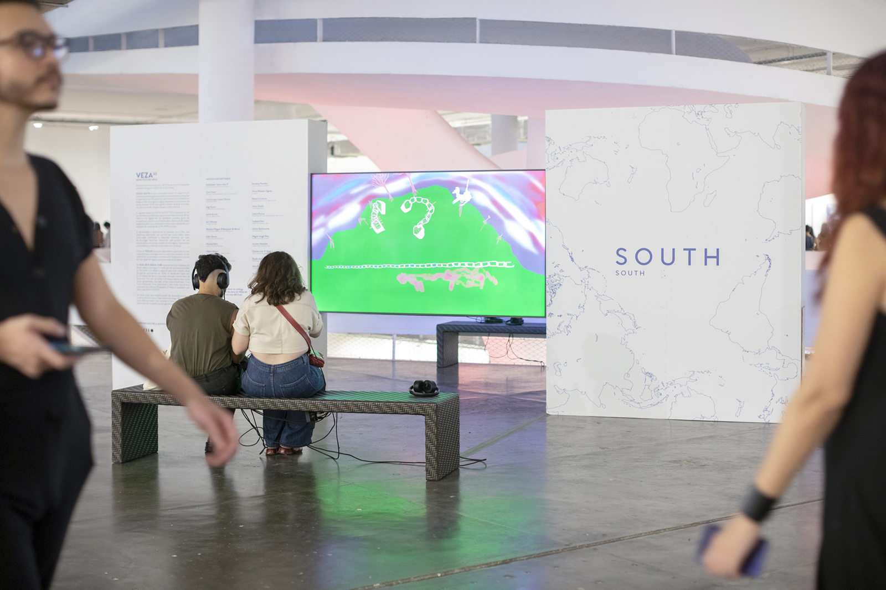
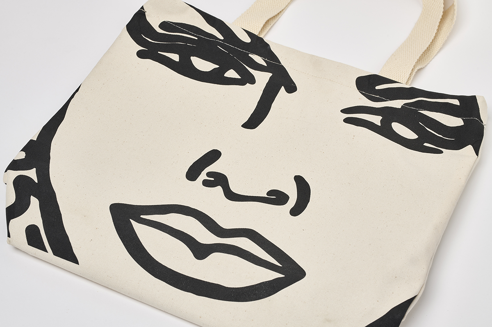
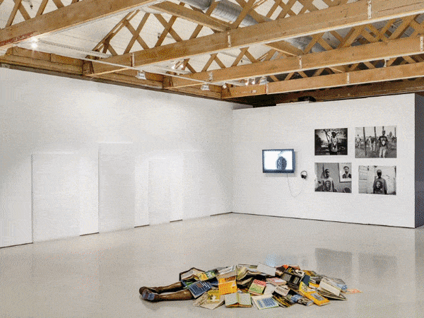

projects 
Independent projects
In 2018 I embarked on an independent career and built various platforms, both online and offline, that supported independent and emergent practice, including offset culture and the UNDERLINE show, which was received to much acclaim and led to myself and co-founder Londi Modiko to being featured on the Apollo 40 Under 40 Africa list in 2020. During this time curatorial projects include LOST LOVER at Lanchonete Lanchonete, in Rio de Janeiro, Brazil and RAMPA in Porto, Portugal and I don’t understand what you’re talking about, but I know what you mean, with Paula Borghi at Goodman Gallery in Cape Town and arteBA, Buenos Aires. In 2020, with Modiko and Nthabiseng Mokoena, I co-founded INCCA (Independent Network for Contemporary Culture & Art), a non-profit company that aims to foster independent cultural practice. I continue to work on INCCA projects and offer content, digital communication and project management for the platform on a primarily voluntary basis.
SOUTH SOUTH
In 2020 I rejoined Goodman Gallery to oversee the evolution of the SOUTH SOUTH project, which – in collaboration with galleries in Brazil, Mexico City, Uganda, India, Tokyo and New York City - was established as an online community, an anthology, an archive and a resource focussed on the Global South. Prior to a year-long maternity hiatus I worked on the platform as a project manager, rejoining as project coordinator in early 2022 , and intermittently consult on the initiative. My work on SOUTH SOUTH has included liaising with galleries, curators, collectors and artists, overseeing the website development and content and roll out and marketing of a regular programme, including special projects in São Paulo and Johannesburg.
Product design
Since 2018 I have worked with Goodman Gallery on a project basis as the production manager for a range of products including tote bags, as well as woven textiles made to raise funds for charities such as the Witkoppen Health and Welfare Clinic. These products have featured the work of artists such as Ghada Amer & Reza Farkhondeh, Cassi Nomada, Nolan Oswald Dennis, and Hank Willis Thomas, amongst others.
Goodman Gallery
From 2010-2018, I worked at Goodman Gallery Johannesburg, primarily in a curatorial and editorial capacity and as a liaison for numerous artists. Here I was, as Latin America liaison, involved in the inception of SOUTH SOUTH, a curatorial initiative exploring connections within and constructions of the Global South. My general duties included managing and curating exhibitions; managing artist relationships, both existing and new; writing press releases; liaising with the press; maintaining elements of the website; writing, editing and designing in-house material including hand-outs, catalogues, books, sales documents and online material; compiling the monthly newsletter and social media content; conceptualising and writing all art fair applications; managing and attending art fairs (Paris Photo; Frieze New York and London; SP-Arte); developing and expanding networks with writers, curators, collectors and museum professionals; hosting museum delegations and designing itineraries including studio visits and special presentations; research on new artists.